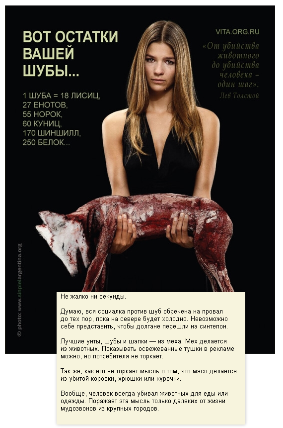

При всём моём уважении к одному известному московскому дизайнеру иногда он как скажет, так скажет.
Он конечно с севера недавно приехал и у него образование, но выводы часто делает как бы очевидные, но по существу неверные. Ну на мой скромный взгляд.
В сегодняшнем бизнес-линче Артемий Лебедев говорит, что «социальная реклама против шуб обречена на провал, пока на севере будет холодно».

Может давно в Москве не был дизайнер из Москвы, а может подсознательно хочет информационный повод создать, но упускает Лебедев тот момент, что никому и в голову не придёт вешать такую социалку среди чукч или жителей деревни Колыон Ижморского района. Целевой аудиторией подобной социальной рекламы являются жители и жительницы больших городов, которые шуб потребляют не меньше каких-нибудь эвенков, и вовсе не потому, что мёрзнут.
Убивать животных для тепла или мяса вполне разумно.
Убивать животных ради красоты или спортивного интереса уже не очень хорошо.
Смешал известный дизайнер тёплое с мягким.